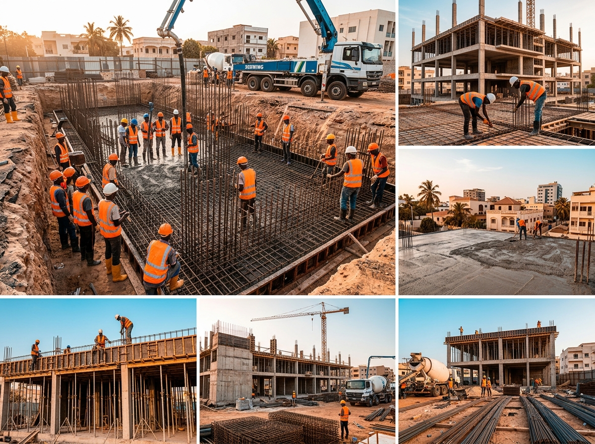
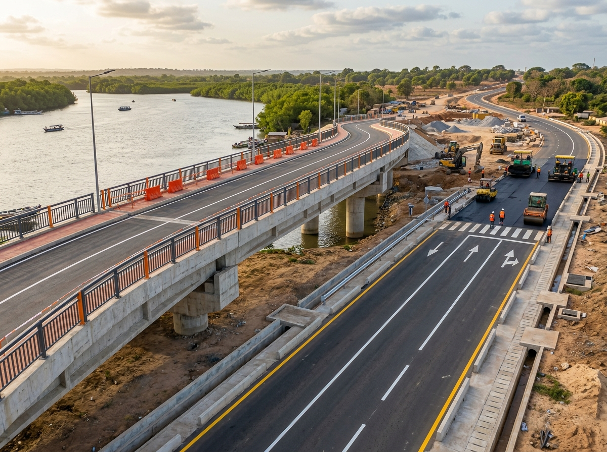
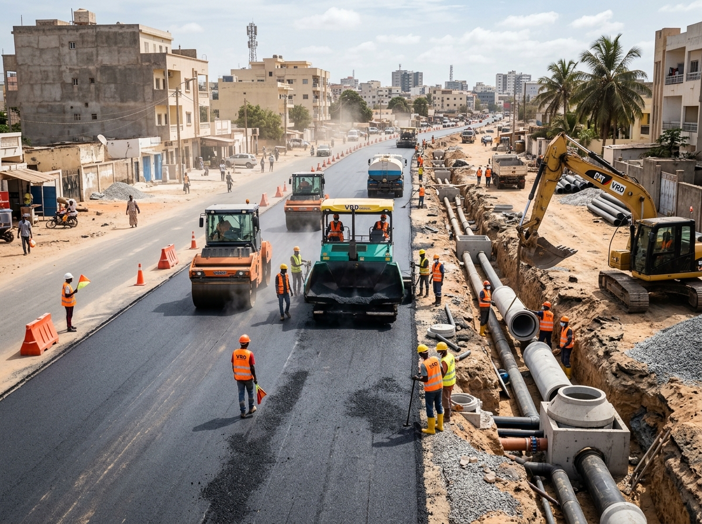
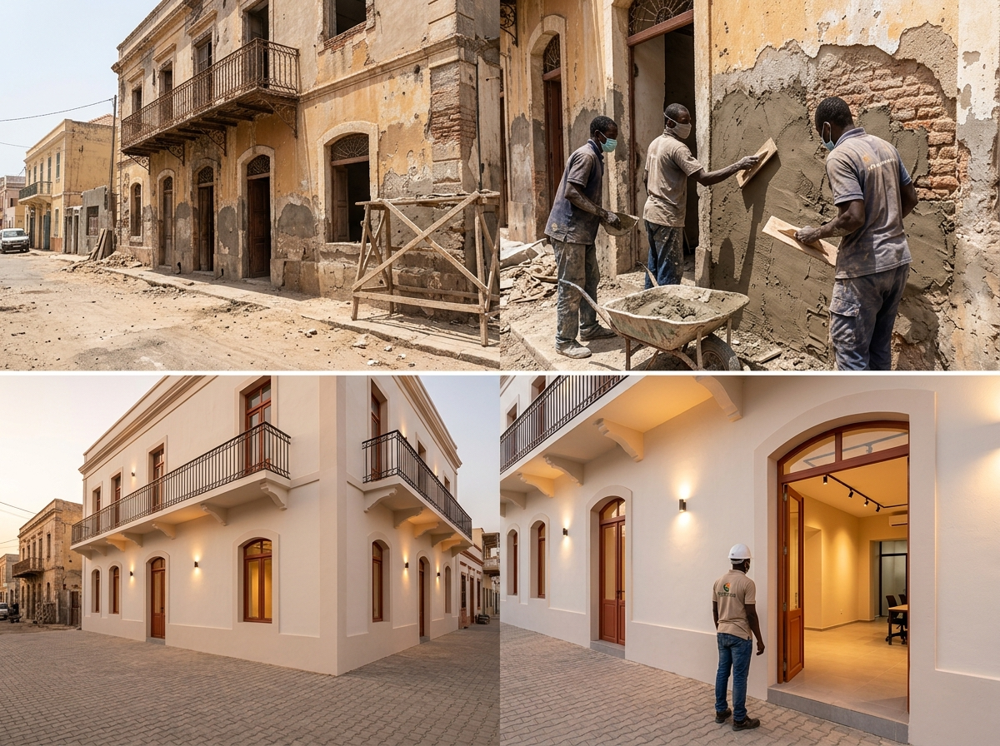
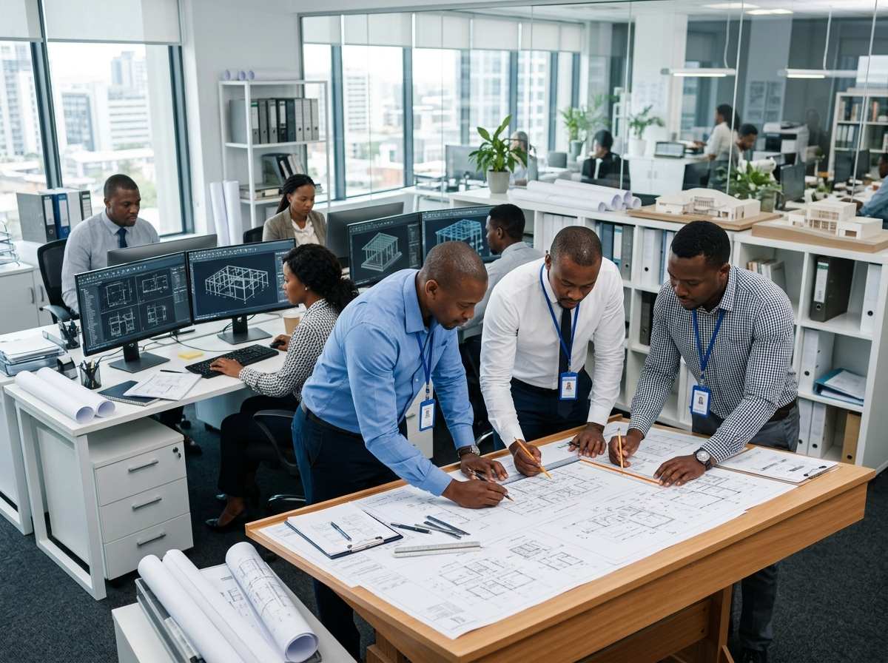

Nos Services BTP
De la conception à la livraison, nous couvrons l'ensemble des métiers du Bâtiment et des Travaux Publics au Sénégal.
Gros Œuvre & Construction
Le gros œuvre constitue le squelette de tout bâtiment. Cymalaubat SUARL maîtrise l'ensemble des techniques de construction, des fondations à la toiture, pour réaliser des ouvrages robustes et durables.
Notre expertise couvre aussi bien les constructions résidentielles individuelles et collectives, que les bâtiments commerciaux, industriels et institutionnels.

Génie Civil & Ouvrages d'art
Le génie civil est au cœur du développement des infrastructures du Sénégal. Cymalaubat SUARL intervient sur les projets les plus complexes : ponts, ouvrages hydrauliques, murs de soutènement et infrastructures lourdes.
Notre équipe d'ingénieurs dispose de l'expérience et des équipements nécessaires pour réaliser des ouvrages d'art qui traversent les générations.

VRD & Voirie
La Voirie et les Réseaux Divers (VRD) sont la colonne vertébrale des espaces urbains. Cymalaubat SUARL réalise l'ensemble des travaux d'infrastructures nécessaires au fonctionnement optimal des quartiers, zones industrielles et lotissements.

Rénovation & Réhabilitation
Donner une nouvelle vie à vos bâtiments existants est l'une de nos expertises phares. Que ce soit pour une rénovation esthétique complète, une mise aux normes structurelle ou une réhabilitation fonctionnelle, Cymalaubat SUARL transforme vos espaces.

Bureau d'Études & AMO
Notre bureau d'études est le cerveau de tous nos chantiers. Composé d'ingénieurs et de techniciens qualifiés, il prend en charge la conception technique complète de vos projets, depuis les études préliminaires jusqu'aux plans d'exécution détaillés.
En tant qu'Assistant à Maîtrise d'Ouvrage (AMO), nous vous accompagnons dans le pilotage de votre projet, coordonnant les intervenants et veillant au respect de vos objectifs.

Votre Projet, Notre Expertise
Quel que soit votre besoin en BTP, Cymalaubat SUARL a la solution. Contactez-nous pour un devis gratuit et personnalisé.